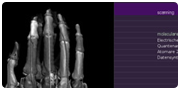
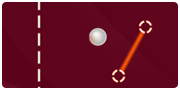

libavg is a high-level development platform for media-centric applications.¶
libavg is great for development of modern touch UIs. It supports all major touch driver models, including Windows touch, Linux XInput, and TUIO. Just as importantly, it has a full-featured event handling system that includes support for direct manipulation and gesture recognition.
Note: libavg is not being developed anymore. If you'd like to work with it anyway: The features/Python3 branch contains code that works on Mac and Linux with Python 3, and is probably the best point to start with.
libavg allows programmers, media artists and designers to quickly develop media applications. It uses python as scripting language, is written in high-speed C++ and uses modern OpenGL for display output. The project has been under constant development since its inception in 2003.
libavg supports the full variety of display elements - images, text, videos, camera output, vector graphics - that modern graphics-intensive applications need. It is fast: the layout engine supports thousands of display elements on the screen at once as well as hardware-accelerated video output. Text using markup, videos with an alpha channel, rendering to offscreen buffers, masking, as well as GPU shader effects such as blur and chromakey are all supported. Plugins written in C++ can expand the engine and have access to all libavg internals. The Tutorial explains all these concepts using a sample application.
libavg runs on Linux, Mac OS X and Windows, is open source and licensed under the LGPL. Development is sponsored by Archimedes Exhibitions (which uses libavg for its exhibits) and by the Interactive Media Lab Dresden (where it is being used for research and education).
Showcase¶
libavg has been used in many artistic and commercial projects - here is a sample. More projects are in the full Showcase.
|  |  | |
| SimMed Medical Education |
c-base Scanner Guards the c-base |
Sponc Multitouch Pong |
| The Special Player Augmented Dancing |
Snatch'em Award-Winning MT Game |
GlobalData Multitouch Maps |